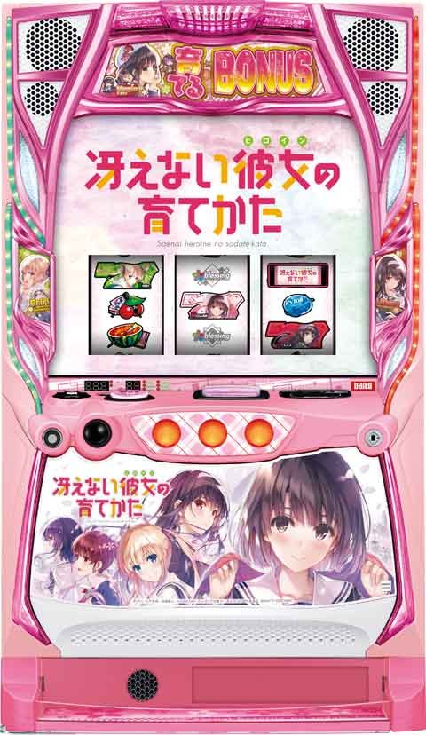

L冴えない彼女の育て方

天井情報
[天井情報]
CZ間天井 131G or 320G CZ当選
ボーナス間天井 923G ボーナス当選
[リセット判別]
不明
[有利区間について]
不明
狙い目
[ボーナス間天井狙い]
740Gから(CZ間0G想定)
※CZ間ハマりも考慮してボーダー調整
[CZ間天井狙い]
※データ機からCZ履歴確認出来ないため、狙い目は暫く暫定になりそうです。
240Gから
131G仮天井狙い
120Gから
[CZゾーン狙い]
不明
[有利区間切れ狙い]
不明
[リセット狙い]
不明
やめ時
ボーナス後高確フォローしてやめ？
現状不明。
参考元
基本情報
- メーカー: サボハニ
- 機械割: 97.8% 〜 110.1%
- 導入開始日: 2024年02月05日（月）
- ゲーム性概要: 通常時はレア役で当選するCZを契機にボーナスを目指すゲーム性で、CZ確率は約1/94（設定1）と遊びやすくなっている。 CZは5種類あり、開始時に小役入賞でCZ種別の昇格を抽選。上位のCZほどボーナス期待度がアップ。好きなヒロインを選ぶこともできる。 出玉増加のメインとなる「育てるボーナス」はベルの押し順で報酬を育成。ボーナス中にCZをストックすることもあり、CZとボーナスのループでまとまった出玉獲得にも期待できる。 CZの大量ストックに期待できる「トリプルヒロインボーナス」など一撃性を秘めたトリガーも搭載している。


打ち方
打ち方・小役
打ち方（小役狙い）
［最初に狙う絵柄］

左リール上段付近にBARを目押し。
［BAR下段停止］ 成立役：ハズレorベルorリプレイorチャンス目

［角チェリー停止］ 成立役：弱チェリーor強チェリー

［スイカ上段停止］ 成立役：スイカorチャンス目

［レア役の停止形］

左リールの狙う位置ごとの小ネタ
左リールはブランクがチェリーの代用となるため、赤7や白7狙いでもOK。
左リール狙う位置ごとの特徴
| 左リール | 特徴 |
|---|---|
| BAR狙い | ハサミ打ち時にリプレイテンパイでリプレイ確定 |
| 緑7狙い | ハサミ打ち時にリプレイテンパイでリプレイ確定 |
| 緑7狙い | 順押し時にベルテンパイでベル確定 |
| 赤7狙い | チャンス目はすべてスイカまでスベる （下段赤7からのチャンス目はナシ） |
| 赤7狙い | 上段スイカテンパイはチャンス目濃厚 |
解析情報通常時
小役関連
小役ごとのCZ・ボーナス当選率
| 役 | 当選率 |
|---|---|
| スイカ | 低 |
| 弱チェリー | ↓ |
| チャンス目 | ↓ |
| 強チェリー | 高（50%以上） |
［設定差ナシ］レア役確率
| 役 | 確率 |
|---|---|
| 弱チェリー | 1/87.4 |
| 強チェリー | 1/262.1 |
| チャンス目 | 1/74.5 |
CZ or ボーナス当選率
通常中はレア役でのみボーナスを抽選するが、高確中はレア役以外でも当選の可能性あり。当選後にCZやボーナスの種別を決定する。
内部状態関連
内部状態概要
内部状態は通常、スキップモード、高確の3種類。 スキップモードは滞在中のCZが上位のスポーツテスト以上 になる。 高確中はレア役でのCZ当選率が通常滞在時の2倍にアップ 。もちろんスキップモードと高確が複合することもある。
内部状態の特徴
| 状態 | 特徴 |
|---|---|
| 通常 | デフォルトの状態 |
| スキップモード | CZ当選でスポーツテスト（期待度約50%）以上 |
| 高確 | レア役時の当選率が2倍にアップかつ レア役以外でもCZを抽選 |
内部状態移行契機
| 状態 | 契機 |
|---|---|
| スキップモード | スイカ |
| 高確 | チェリー（ハズレ・ベル・リプレイでも抽選） |
スキップモード移行率
スイカ成立時とぷちヒロインボーナス終了時にスキップモードへの移行を抽選。移行時は10〜30Gの保証ゲーム数を消化後から、毎ゲーム転落が抽選される。
スキップモード移行率
| 抽選契機 | 移行率 |
|---|---|
| スイカ | 37.5% |
| ぷちヒロインボーナス終了時（※） | 50.0% |
※終了時にCZやボーナスの権利を持っている場合は抽選ナシ
スキップモードゲーム数振り分け
| ゲーム数 | 通常時のスイカ | スキップモード中のスイカ |
|---|---|---|
| 10G | ー | 75.0% |
| 20G | 87.5% | 23.4% |
| 30G | 12.5% | 1.6% |
| ゲーム数 | 通常時の プチヒロインボーナス終了時 | スキップモード中の プチヒロインボーナス終了時 |
| 10G | ー | 50.0% |
| 20G | 46.9% | ー |
| 30G | 3.1% | ー |
高確移行率
おもに弱チェリーで高確移行を抽選。CZ・ボーナス終了後は高確からスタートする。移行時にショート・ミドル・ロングの3つのいずれかに振り分けられ、どれが選ばれたかで高確からの転落率が変化する。
高確移行率
| 設定 | レア役以外 | 弱チェリー |
|---|---|---|
| 1 | 0.2% | 20.3% |
| 2 | 0.2% | 20.3% |
| 3 | 0.3% | 20.3% |
| 4 | 0.3% | 20.3% |
| 5 | 0.3% | 20.3% |
| 6 | 0.3% | 20.3% |
高確種別振り分け＆種別ごとの転落率
| 種別 | 振り分け | 転落率 |
|---|---|---|
| ショート | 81.3% | 50.0% |
| ミドル | 18.4% | 25.0% |
| ロング | 0.4% | 10.2% |
前兆
本前兆中のレア役・抽選内容
| 前兆種別 | 内容 |
|---|---|
| SC | SC（赤タイトル）への昇格抽選と ボーナス直撃抽選 |
| SCsf | 育てるボーナス直撃抽選 |
| ぷちヒロインボーナス | 育てるボーナス昇格抽選 |
| 育てるボーナス | 育てるボーナスの初期枚数上乗せ抽選 |
| トリプルヒロインボーナス | トリプルヒロインボーナスの 初期枚数上乗せ抽選 |
本前兆中・確定画面の昇格＆上乗せ抽選
ぷちヒロインボーナス本前兆中〜確定画面ではレア役で育てるボーナスへの昇格を抽選。育てるボーナス以上の場合は初期差枚数の上乗せが抽選される。
ぷちヒロインボーナス当選中の育てるボーナス昇格率
| 役 | 昇格率 |
|---|---|
| 弱レア役 | 3.1% |
| 強レア役 | 12.5% |
育てるボーナス以上当選中の初期差枚数上乗せ当選率
| 役 | ＋10枚 | ＋20枚 |
|---|---|---|
| 弱レア役 | 25.0% | － |
| 強レア役 | 93.8% | 6.3% |
CZ
冴えカノチャレンジ（SC）概要
CZ当選後に移行するCZの種別を決定するゾーン。小役以外でCZ種別が決定、小役入賞時は種別の昇格を抽選する。 3種類の演出モード（キャラ）を任意で選択可能。選んだキャラクターに応じて種別の決定演出だけでなく、CZ中も選んだキャラが登場する。 冴えカノチャレンジsfだった場合は、成功時の恩恵が育てるボーナス以上となる。
冴えカノチャレンジ初当り確率
［恵SC］

小役以外時にPUSHボタンで継続をジャッジ。
［英梨々SC］

BETやレバーON時に継続をジャッジ。
［詩羽SC］

最終的にボタン長押しでCZの種別を告知。
［冴えカノチャレンジsf］

CZ概要
成功すればボーナスとなる自力要素満点のCZ。5種類あり、パターンで期待度が大きく変化する。同じぷちヒロインでも恵なら「クエスト」、英梨々なら「ファイター」、詩羽は「鉄道」というように見た目などが変化するので、ファンならではの楽しみも味わえる。
CZ種別ごとの期待度
| 種別 | 期待度 |
|---|---|
| ぷちヒロイン | 約35% |
| ギャルゲーデート | 約40% |
| スポーツテスト | 約50% |
| 水上アスレチック | 約60% |
| ヒロインフリーズ | 約80% |
［ぷちヒロイン］

［ギャルゲーデート］

［スポーツテスト］

［水上アスレチック］

［ヒロインフリーズ］

SC中のCZ種別昇格率
SC開始画面（キャラセレクト時）の小役を参照して、冴えカノチャレンジsfへの昇格を抽選 する。SC（sf含む）消化中は小役入賞でCZ種別が昇格。ハズレを引いても即終了（CZへ移行）というわけではなく、現在のCZ種別を参照して昇格が抽選される。
キャラセレクト時の小役別・昇格率
| 役 | SC時→ SCsfへ昇格 | SCsf時→ スポーツテストへ昇格 |
|---|---|---|
| レア役以外 | 0.4% | 0.4% |
| 弱チェリー／スイカ | 25.0% | 6.3% |
| 強チェリー | 75.0% | 100% |
| チャンス目 | 50.0% | 25.0% |
通常のSC時はSCsfへの昇格を、SCsf時は初期CZがスポーツテストになる抽選をおこなう。
SC（sf）消化中・成立役ごとのCZ種別昇格率
| 昇格 | ベル | リプレイ | 弱レア役 | 強レア役 |
|---|---|---|---|---|
| 1段階 | 98.8% | 99.2% | 50.0% | ー |
| 2段階 | 0.4% | 0.8% | 48.8% | 92.2% |
| ３段階 | 0.4% | ー | 0.8% | 6.3% |
| 4段階 | 0.4% | ー | 0.4% | 1.6% |
※弱レア役…弱チェリー、スイカ 強チェリー…強チェリー、チャンス目
SC（sf）消化中・ハズレ時のCZ種別昇格率
| 現在のCZ | 1段階昇格 |
|---|---|
| プチヒロイン | 40.0% |
| ギャルゲーデート | 30.0% |
| スポーツテスト | 25.0% |
| 水上アスレチック | 20.0% |
※上記抽選に漏れた時の0.8%でヒロインフリーズへ昇格
赤タイトル昇格抽選
タイトルの色が赤なら、各CZの成功期待度がアップ。赤タイトルへは、CZ本前兆中のレア役やCZ開始時の小役で昇格を抽選する。
CZ開始時・赤タイトル当選率
| 役 | 当選率 |
|---|---|
| 下記以外 | 3.1% |
| 弱レア役 | 25.0% |
| 強レア役 | 100% |
※弱レア役…弱チェリー、スイカ 強チェリー…強チェリー、チャンス目
赤タイトル時の恩恵
| CZ | 恩恵 |
|---|---|
| ぷちヒロイン | 初期ポイントが5pt、MAPの種類が優遇、 約50%でボーナスマス出現 |
| ギャルゲーデート | 消化中のすべての抽選が優遇 |
| スポーツテスト | 毎ゲームの継続率がアップ |
| 水上アスレチック | 開始時にライバルを2人撃破 |
| ヒロインフリーズ | 成功確定 |
プチヒロイン・消化中の抽選
選択キャラによって見た目は異なるが、マスと成立役を参照してポイントを獲得していき、累計10pt獲得できればボーナス。レア役成立時は追加でポイントを獲得できる。ピンチマス（ライフ減算のピンチとなるマス）でレア役を引いた場合は、減算ナシでポイントを獲得する。
ボーナスマス出現率
| タイトル色 | 出現率 |
|---|---|
| 通常 | 6.3% |
| 赤 | 50.0% |
※当選時はMAP内のどこかにボーナスが出現、ボーナスマス時の小役入賞でボーナス
レア役成立時・追加ポイント振り分け
| ポイント | 弱チェリー・スイカ | 強チェリー | チャンス目 |
|---|---|---|---|
| ＋1 | 50.0% | ー | ー |
| ＋2 | 25.0% | ー | 81.3% |
| ＋3 | 25.0% | ー | 6.3% |
| ＋4 | ー | ー | 6.3% |
| ＋5 | ー | 100% | 6.3% |
ギャルゲーデート・消化中の抽選
CZ開始時にタイトルの色と成立役を参照してボーナスの当否を抽選。非当選の場合は消化中の成立役に応じて書き換えを抽選する。
開始時・ボーナス当選率
| タイトル色 | 当選率 |
|---|---|
| 通常 | 27.3% |
| 赤 | 51.6% |
消化中のボーナス当選率
| 役 | 通常タイトル | 赤タイトル |
|---|---|---|
| 下記以外 | 0.8% | 2.3% |
| 弱レア役 | 25.0% | 50.0% |
| 強レア役 | 50.0% | 75.0% |
※弱レア役…弱チェリー、スイカ 強レア役…強チェリー、チャンス目
スポーツテスト・消化中の抽選
毎ゲームの成立役に応じて継続抽選がおこなわれ、6回継続させればボーナス。小役時は継続確定で、1Gあたりの平均継続率は約90%だ。
成立役別・継続率 通常タイトル
| 役 | 非継続 | 継続 | 継続2回分 |
|---|---|---|---|
| ハズレ | 15.2% | 84.8% | ー |
| ベル | ー | 100% | ー |
| リプレイ | ー | 100% | ー |
| 弱レア役 | ー | 87.5% | 12.5% |
| チャンス目 | ー | 50.0% | 50.0% |
| 強チェリー | ー | ー | 100% |
赤タイトル
| 役 | 非継続 | 継続 | 継続2回分 |
|---|---|---|---|
| ハズレ | 9.0% | 91.0% | ー |
| ベル | ー | 100% | ー |
| リプレイ | ー | 100% | ー |
| 弱レア役 | ー | 75.0% | 25.0% |
| チャンス目 | ー | ー | 100% |
| 強チェリー | ー | ー | 100% |
水上アスレチック・消化中の抽選
押し順ベルの2択当てやレア役でライバルを全員倒せればボーナス。当選時はナビのストックを1個以上持った状態でスタートする。ライバルを倒した次ゲームでベルが成立すれば約50%で2択ナビが発生するので、連続撃破のチャンスだ。
開始時（競技決定時）・全ナビストック個数振り分け
| 役 | ナビ1個 | ナビ2個 |
|---|---|---|
| ベル | 100% | ー |
| 弱レア役 | 100% | ー |
| 強レア役 | 50.0% | 50.0% |
※弱レア役…弱チェリー、スイカ 強チェリー…強チェリー、チャンス目
成立役別・撃破人数振り分け
| 役 | 1人 | 2人 |
|---|---|---|
| ベル入賞 | 93.8% | 6.3% |
| 弱レア役 | 96.9% | 3.1% |
| 強レア役 | 50.0% | 50.0% |
※弱レア役…弱チェリー、スイカ 強レア役…強チェリー、チャンス目
水鉄砲バトル時の全ナビ発生率
| 恵選択時 | 詩羽選択時 | 英梨々選択時 | 発生率 |
|---|---|---|---|
| 詩羽 | 英梨々 | いづみ | 95.3% |
| 英梨々 | いづみ | 恵 | 70.3% |
| いづみ | 恵 | 詩羽 | 25.0% |
| みちる | みちる | みちる | 10.2% |
ヒロインフリーズ・消化中の抽選
毎ゲーム、成立役に応じてフリーズの発生を抽選。最終ゲームの小役は期待度が大幅にアップする。赤タイトル時は最終ゲームの期待度が100%なので必ず成功。ロングフリーズが発生し、育てるボーナスffへ昇格することも!?
フリーズ発生率
| 役 | 通常タイトル | 赤タイトル | ||
|---|---|---|---|---|
| 役 | 消化中 | 最終ゲーム | 消化中 | 最終ゲーム |
| その他 | 11.7% | 25.0% | 11.7% | 100% |
| ベル | 25.0% | 44.0% | 50.0% | 100% |
| 弱レア役 | 25.0% | 75.0% | 25.0% | 100% |
| 強レア役 | 100% | 100% | 100% | 100% |
※弱レア役…弱チェリー、スイカ 強レア役…強チェリー、チャンス目
天井
CZ天井ゲーム数振り分け
有利区間移行時（設定変更後）やぷちヒロインボーナス後は131Gの選択率が大幅にアップ。高設定ほど131Gが選ばれやすいところにも注目したい。
［その他（CZ終了後など）］CZ天井振り分け
| 設定 | 131G | 320G |
|---|---|---|
| 全設定共通 | 5.1% | 94.9% |
演出動画
ロングフリーズ
発生した時点で育てるボーナスff確定。本機屈指の激アツ演出となっている。
解析情報ボーナス時
育てるボーナス
育てるボーナス概要

出玉増加のメインになるボーナス。基本的に 「育てるパート」 と 「エピソードパート」 があって、育てるパートでは差枚数を増やしながらエピソードを目指し、エピソードでCZを獲得していく流れ。ボーナス終了後は獲得したCZで再度ボーナスを目指すというゲーム性だ。 また、各パートでは「桜メダル」獲得を抽選していて、獲得数に応じてボーナス終了後にCZやボーナスを抽選するため、エピソードに行かなくても連チャンに期待できる。
育てるボーナスの性能
| 内容 | 項目 |
|---|---|
| 継続ゲーム数 | 1セット（初回は差枚数30枚）×3セット ※エピソードは10or20G/セット×MAX10セット |
| 1Gあたりの純増 | 約3.5枚 |
| 育てるパート中の抽選 | 差枚数パネルの育成、桜メダル獲得 |
| エピソード中の抽選 | 押し順1st点灯、桜メダル獲得 |
［育てるパート］

押し順ベルを引くたびに、 押し順に対応したパネル（上乗せ枚数）を育てていき、差枚数消化後の押し順ベルで対応した枚数をゲット 。次セットはベースの30枚に上乗せ分が加算されるため、パネルも育てやすくなる。枚数ではなくエピソードパネルを射止めればエピソードへ移行する。
［エピソードパート］

10G/セットで、10G以内に 左1st・中1st・右1stの押し順ベルをすべて引ければセット継続 （対応ナビ発生時はリール右側のデフォルメヒロインが点灯）。MAXの10セット継続でCZをストックする。 赤エピソード時は1セット20Gとなり、5セットがMAXセットとなるため、高確率で完走。終了後（継続失敗orMAX継続）は育てるパートの残りを消化することになる。
［桜メダル獲得］

レア役や報酬MAX時の押し順ベルなどで獲得。獲得数はリール左側にある貯金箱の色で示唆される。
［桜メダルの抽選］

ボーナス終了後に桜メダル数に応じて当選内容が告知される。
育てるパートの抽選
ハズレとリプレイは抽選に当選すればレベルアップアイコンを1個獲得。レア役はアイコン1個以上確定かつ差枚数の減算ストップが抽選される。
［ハズレ・リプレイ］レベルアップアイコン当選率
| 設定 | 1個 |
|---|---|
| 1 | 55.1% |
| 2 | 55.4% |
| 3 | 56.0% |
| 4 | 56.9% |
| 5 | 57.5% |
| 6 | 58.1% |
［レア役］レベルアップアイコン振り分け
| 役 | 1個 | 2個 | 3個 | 4個 |
|---|---|---|---|---|
| 弱レア役 | 70.3% | 25.0% | 3.1% | 1.6% |
| 強レア役 | － | 50.0% | 25.0% | 25.0% |
差枚数減算ストップ当選率＆ゲーム数振り分け
| 役 | 当選率 | 減算ストップゲーム数 | ||
|---|---|---|---|---|
| 役 | 当選率 | 3G間 | 5G間 | 7G間 |
| 弱レア役 | 5.1% | 61.5% | 30.8% | 7.7% |
| 強チェリー | 20.3% | 61.5% | 30.8% | 7.7% |
| チャンス目 | 10.2% | 61.5% | 30.8% | 7.7% |
育てるボーナスff
育てるボーナスff概要

通常時のフリーズ契機のBAR揃いから移行するプレミアムボーナス。ゲーム性は育てるボーナスと同じだが、 初期枚数（ベース枚数）が100枚と多いうえ、エピソード獲得時は1セット20Gかつ5セットで完走（CZ獲得） になるためかなり強力だ。
育てるボーナスffの性能
| 内容 | 項目 |
|---|---|
| 継続ゲーム数 | 1セット（初回は100枚）×3セット ※エピソードは20G/セット×MAX5セット |
| 1Gあたりの純増 | 約3.5枚 |
| 期待獲得枚数 | 約1000枚 |
| 育てるパート中の抽選 | 差枚数パネルの育成、桜メダル獲得 |
| エピソード中の抽選 | 押し順1st点灯、レア役は継続確定、 桜メダル獲得 |
ぷちヒロインボーナス
ぷちヒロインボーナス概要

いわゆるREG的存在で、出玉も少ないのだが、消化中は ベル以外の小役で冴えカノチャレンジsf（CZ成功で育てるボーナス以上）を抽選 。終了後は50%でスキップモードへ移行するため、終了後も即ヤメせずにしばらく様子を見たい。
ぷちヒロインボーナスの性能
| 内容 | 項目 |
|---|---|
| 継続ゲーム数 | 差枚数60枚 |
| 1Gあたりの純増 | 約3.5枚 |
| 消化中の抽選 | ベル以外で冴えカノチャレンジsf抽選 |
| 終了後の特典 | 約50%でスキップモード突入 |
成立役別・SCsf当選率
| 役 | 当選率 |
|---|---|
| ハズレ | 0.4% |
| リプレイ | 0.4% |
| 弱チェリー／スイカ | 12.5% |
| 強チェリー／チャンス目 | 50.0% |
トリプルヒロインボーナス
トリプルヒロインボーナス概要

CZの大量ストックに期待できるプレミアムボーナス。前半では、レア役で後半に抽選されるCZのレベルアップをストック。後半の育てるチャレンジでは、押し順1stに対応したCZがレベルアップして、最大まで育つと該当のCZがストックされる。終了時は表示されている3つのCZを獲得できるので、超レアケースだがめちゃくちゃ引きが悪くても最低3つのCZは獲得できる。
トリプルヒロインボーナスボーナスの性能
| 内容 | 項目 |
|---|---|
| 継続ゲーム数 | 差枚数100枚（前半）、10G＋α（後半） |
| 1Gあたりの純増 | 約3.5枚 |
| 消化中の抽選 | 前半はCZ種別アップストック、 後半はCZ種別アップ （MAXになるとCZ獲得） |
| 期待獲得枚数 | 約1000枚 |
［前半パート］

［育てるチャレンジ］

レア役の全パネルアップ抽選
トリプルヒロインボーナス中のレア役は全パネルが1段階以上アップ。前半・後半共通の抽選だが、前半パートでは見た目上、レベルアップアイコンとして表示される。
レア役時の全パネルアップ振り分け
| 役 | 1段階アップ | 2段階アップ |
|---|---|---|
| 弱レア役 | 87.5% | 12.5% |
| 強チェリー | － | 100% |
| チャンス目 | 50.0% | 50.0% |
ボーナス共通
ボーナス当選時の比率（設定1）
| ボーナス | 比率 |
|---|---|
| ぷちヒロインボーナス | 43.0% |
| 育てるボーナス以上 | 57.0% |
演出情報
通常時
ステージごとの示唆
| ステージ | 示唆 |
|---|---|
| 旅館ステージ | スキップモード示唆 |
| 倫也ステージ | 高確示唆 |
| 喫茶店ステージ | 高確濃厚 |
| 温泉ステージ | 本前兆濃厚 |
| 電車ステージ | スキップモード＋高確濃厚 |
［旅館ステージ］

［倫也ステージ］

［喫茶店ステージ］

［温泉ステージ］

［電車ステージ］

ボーナス共通
確定画面の小ネタ

ボーナス確定画面では、狙う絵柄によって一足先にボーナス種別を察知できる。
「育てるボーナス or トリプルヒロインボーナス1確目」

その他
衣装カスタム解放

メニュー画面から、各キャラクターの衣装を変化して楽しむことが可能。おもにゲーム数を消化することで新しい衣装を解放できる。
衣装カスタム解放条件
| 衣装 | 解放条件 |
|---|---|
| 制服 | 初期解放 |
| 私服 | 2500G |
| パジャマ | 2500G（累計5000G） |
| 水着 | 2500G（累計7500G） |
| ??? | ??? |
| ??? | ??? |
| ??? | ??? |
※水着までは1レベルアップに約50G必要、レベル50で衣装が解放されレベル1へ